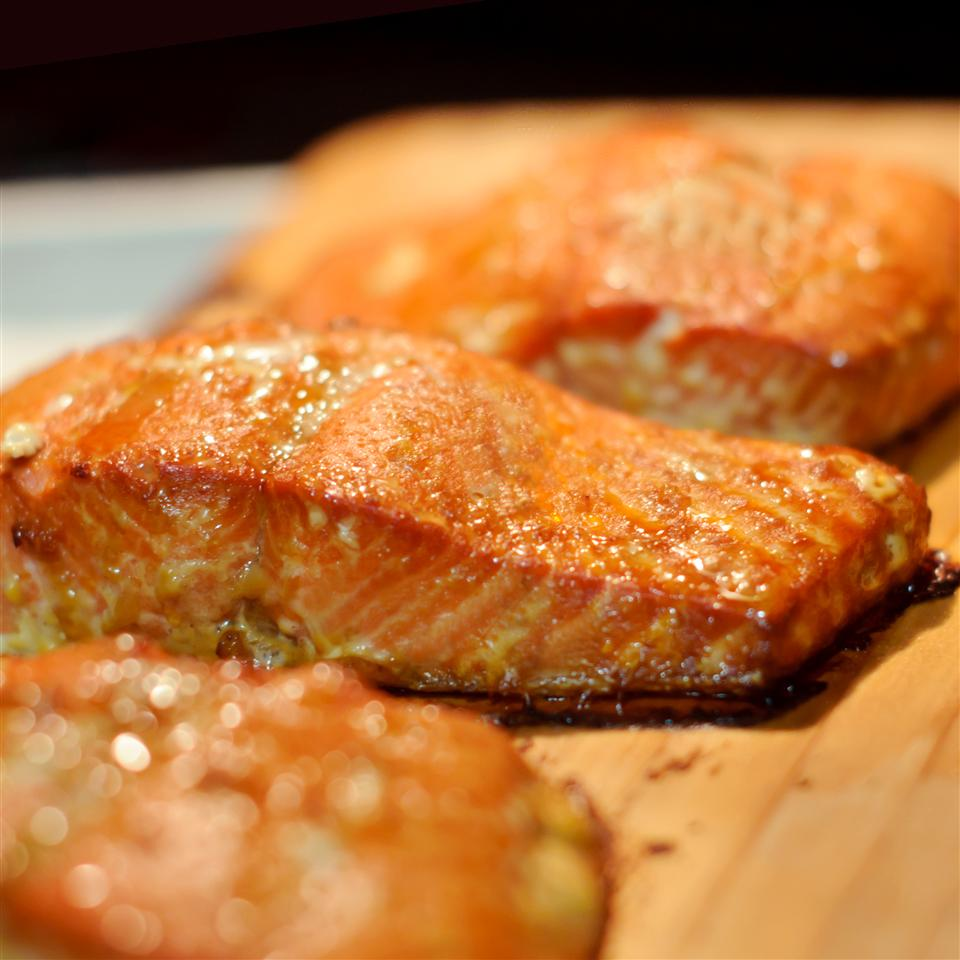

Ceder Planked Salmon

- Soak the cedar planks for at least 1 hour
in warm water. Soak longer if you have time.
- In a shallow dish, stir together the vegetable
oil, rice vinegar, sesame oil, soy sauce,
green onions, ginger, and garlic. Place the
salmon fillets in the marinade and turn to
coat. Cover and marinate for at least 15
minutes, or up to one hour.
- Preheat an outdoor grill for medium heat.
Place the planks on the grate. The
boards are ready when they start to smoke
and crackle just a little.
- Place the salmon fillets onto the
planks and discard the marinade.
Cover, and grill for about 20 minutes.
Fish is done when you can flake it
with a fork. It will continue to cook
after you remove it from the grill.